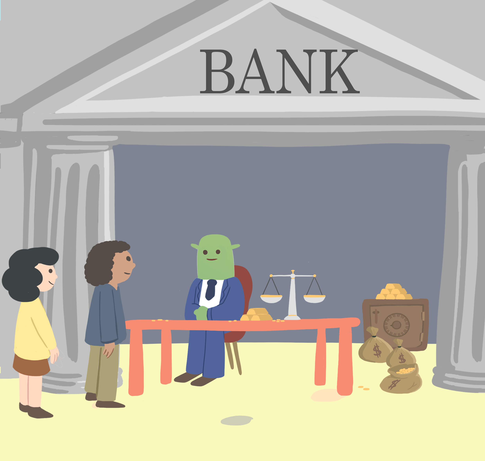

Tumblien Tale is meant to observe the collaborative economy. The economy deals with how effort is organised to satisfy needs to sustain life. Economics could be extended to animals too. Tumblien is an alien that tumbles on Earth and hacks the human economy. The story happens in a random time of History. Supposedly Tumblien takes an unnoticeable human shape.
“Finally fresh air” thinks Tumblien breathing in. He goes out of the spaceship. After stretching he turns around, looks aside and notices birds singing. Few days forward Tumblien decided to build a shelter and live from cultivating the ground and hunting other animals. A primitive way to satisfy needs. Any person, in any time, would to do the same. Either self-employed or working for somebody who already settled down. Tumblien does on his own initiative.
Tumblien is patient and persistent. Rapidly he is getting more vegetables then he needs to feed himself. “Even after saving enough food for 3 weeks, there is still more than half left. I do not want the remaining to rot". A passing peasant passed one day. Discussing, the peasant told Tumblien food was scarce and welcomed in towns. He feels happy to be able to help others. From now on once a week he journeys to one of the closest villages with his left over in hand.

At the town Tumblien discover the myriad of products people bring. Some products available in great quantity cost little and rare products cost more, he wonders why. Asking Jack the trader, finds that “Some products are almost readily available in nature... while others cost more time and effort to get them made...”. He is told too about some magic products able to reduce the time needed to produce other products. “These magic products are similar to superpowers..." continues Jack "... as they'll allow you to do a day what before took you seven” adds Jack, looking more like a wizard than a trader. “Is there a magic product that could help me work the ground?” asks Tumblien full of enthousiasm. The magic trader disappears in the back store of the market stall.
He comes back with an irrigation hose in his hands. Tumblien, reminding all the wet hours he spent going back and forth to the lake, happily agrees to trade the hose for all his surplus. He thanks Jack and thinks to himself “Ah, what a great deal”. He becomes now an entrepreneur that owns products made to produce faster.
As the weeks pass Tumblien plants more land. With his new free time from the irrigation hose he can. He increases his production and free time. To the extent that he needs to go everyday to the market. Luckily he gets to trade his products for another great magic product: a carriage. With which he could transport at once what he used to take in 13 trips to the village. “With this new carriage I won’t need to go to the village everyday anymore.” With time, he starts liking the town and trading. He admires the talents of people at creating magic. He is very grateful for the existence of the market.
“If I would invent some magic product, I would probably take it to the market.” Tumblien thinks to himself “The market is the crosspoint of most trades, the union point of creativity and entrepreneurial initiative”. He likes to be among the firsts to discover newly appearing magic products. Consequently he intends to rent a market store. For that he hosts 2 persons that agree to work with him. “I will teach you all you have to do. You can use my shelter. I will move to the village and trade our production to provide you with all you need” and the two workers noded yessing. Tumblien moved to a small building in the village. At the basefloor he holds vegetables shop.
Everyday, early in the morning, he journeys to his shelter. And comes back to town before 7am with the carriage full. During the day he trades for other products. And the day after he carries back products to the persons who work at his shelter. Products for them, in exchange for their work, as well as magic products for the farm production. His farm keeps growing. In as little as 1 year the area cultivated has been extended tenfold and 14 persons are working with him. Tumblien feels very lucky. He organizes the farm and the store. When others don’t know what he would do at their place they check with him and execute.
In his store, on the shelter land, everywhere accumulated products are piling up. Products that were traded in for vegetables brought to the market. “We have 5 tablewares, meters of tissue to make clothes, clothes, some barrels of delicious drinks, wardrobes, decorated furnitures...” counts Tumblien. These products are wealth: valuable things, that cost time and work to be produced, and he already had them. He’s got to be a wealthy busy man, a businessman.

A night Tumblien was infatuated by a calm and passionate woman. Years forward they get married and bring some children. As his littles grow up, he is concerned: “As better magic products are produced, all products become producible with less time and effort… consequently all products are constantly becoming available in greater quantity . And the products I own are becoming available in greater quantity their price is falling...”. So he concludes his wealth is loosing value. “I don’t want my wealth to loose all its value. I would like to let something to the kids”.
Accordingly he desires to trade his wealth. He asks for things that won't loose value through time. “How other wealthy business men store their wealth?” queries around in the market place. “The most wealthy men build big castles. Also they order pieces of art like portraits, gold jewelry and silver tableware. These pieces of art most often represent their will in life. An of their power to protect their interests.” Jack tells him. After careful analysis, “To store wealth, gold and silver have the best properties” judges Tumblien “durable without loosing any property, divisible to match any value size in trade and transportable without risk of damage. Not like castles or paintings”. Trading his wealth to avoid loosing value, Tumblien has become a wealth manager.
Soon he is only accepting silver and gold in exchange for his products. Also he starts trading out all his products, not only vegetables. The metals are his way to store the value of wealth. New improved magic products keep emerging. In consequence products availability in the market increases. But availability of gold and silver doesn't increase as fast. So the value of the metals doesn't fall as with the other products. “I will call 'money' any product good to store value through time. They are money products”.
The practice of trading against a unique good has some advantages. Everybody knows what to bring to Tumblien’s store to take food: metals. Rapidly the fashion spreads. All merchants follow storing wealth in metallic money. The vocabulary is accordingly expanded. "Trade” is replaced by two verbs: “buy” and “sell”. Buy means bringing money metals to the market expecting to take some other products. Sell means bringing some products to the market expecting to receive money products for them. "Pay" means giving money products, giving metals. "Liquidity" means how easily a product can be sold, in other words, transformed into money. Metals are by excellence the most liquid product as they are used as money. Everybody in the horizon is now using metals as money products. Because of storing value, a unpredented use is found for metals: transmutability (of changeableness). Metals become a wild card product transmutable, changeable, against any other with great acceptance. Also it that can be stored up for future use. Storing it means changing present products against future products.
Recall: Tumblien Tale is meant to observe the economy. The economy deals with how effort is organised to satisfy needs to sustain life.
Tumblien expresses his thought as such "metals are the most liquid product. They can be turned into anything that has been produced by humans. Money is the way to stay wealthy. As more people uses metals as money, the same quantity will be split among more people. Therefore, the more people uses metals as money the more valuable becomes money due to scarcity of metals. Furthermore as products become available in greater quantity they will cost less money. Therefore the more abundant are products, the more valuable becomes money due to abundance of products”. Tumblien knows metallic money will grow a very valuable product. Forward in time security must turn into a concern.
“How other wealthy men safe guard their money?” wonders Tumblien. “Since money is such a valuable product, I could start up a safe deposit of money. I will call it bank.” The new bank is not very welcome in the market. Obviously, people is mistrustful about leaving their wealth at another's place. However Tumblien gets a brilliant idea to make it run. “To make the fashion spread I need prestige." Tumblien finds out "No one is more prestigious than the merchants that bring everything to the town. So I will start by these small elite." Tumblien realizes his purpose "To make the wealthiest merchants use the bank receipts as money instead of metals”. Through secret meetings Tumblien communicated his intentions. He proposed good credit conditions, low interests loans, easy money, to wealthy businessmen. He eloquently showed that the bank receipts would allow them to buy more magic products and expand their power. In exchange, these prestigious celebrities would store their wealth at the bank and use bank receipts instead, so that the public follows. They took the hook.
Indeed, as wealthy merchants used bank receipts to pay their employees, people attended the bank to cash the receipt. After some weeks, they spared the trip to the bank and just use the receipt as money. All happened as if people voluntarily had deposited their metals in the bank. Two moneys coexisted for long, metals money (a product) and receipt money (a paper). The receipts took a prestigious name "Bills". And as bills were a standard quantity, account checkbooks were used too. On an acount check one could write any metal quantity to be transferred, not only the standard 1oz. (ounce is 28.3495 grams) bill. People started indifferently confusing bills and metals moneys, and calling them just money. Tumblien, along with his family and secret prestigious network, have gotten to be known in the marketplace as the Banker, the banking family and their collaborators.
People rarely come to ask their metals money. Instead they get used to the lightness of bills. The real money (metals) stays in the safe-deposit box. Years forward, the level of real money in the safe didn’t fell once under 80% of the peak quantity. And actually only rises year over year. Everybody is now holding deposits at the bank, as if the greatest debtor of all was Tumblien's bank. “I can now proceed to lend this idle money as agreed with the wealthy businessmen that collaborated" reasons the human-like alien. The banking project gets hackier than ever here. Tumblien decides to lend not the actual metal money but rather issues new bills on interest. And that is how Tumblien hacked money and the economy. A hack in his favor, a scam, a dishonest scheme for most.
Every scam has two sides: an appealing side made public and a conspiratory side kept secret. On the one hand lending money made people around him richer. First he lent his network of wealthy businessmen. In exchange for the issued bills he receives a written commitment to pay back the money and some interests, a credit contract. Around him wealthy business men blossom. With the credit bills they buy state-of-the-art magic goods. Magic products reduce the costs of time and work under competitors' costs. And they get to raise more revenue by selling at the cheapest price.
Reflecting on the magic products, “Businessmen succeed thanks to the magic products. With the latest magic products, producing costs less time and effort. We've got to increase the quantity of products available, lower their price below competitors'. Magic products are really important. I will call them capital products, meaning they lead the quantity and price of products”.
Around Tumblien, the quantity of products increases dramatically. The phenomenon is called industrial revolution. People moves to the town in search for high wages. They work in some bank-financed business. Wages, which is the money paid to employees of these companies, are higher than elsewhere. All sorts of products are available, people get to live at ease. Employees can sustain their life, their family's life and even save money. A rural exodus takes place. Population redistributes from the country to the city. Abundance of hygiene products allows children to stop dying in their infancy. The result is the demographic transition: the population doubles every few decades.
Remember: the more people use money, the scarcer money is; the more products are available, the more valuable becomes money. Therefore the value of money steadily increases. Credit to businessmen pours into circulation new bills to balance scarcity. Tumblien's network triumphs: entrepreneurs bring additional metal money every year to the bank. The Banker decides to scale. He orders opening banks in every town where magic products are traded. “The network is burgeoning. We bring the lowest-effort production techniques everywhere. We finance the most state-of-the-art businesses. We lead the lowest prices. We constantly monitor the market for new capital products. We provide people with the cheap material products that all like and need; at a low-cost with a profitable margin" Tumblien tells to Jack, as if the pupil overwhelmed the master. But Jack is a magician too and starts unraveling Tumbliens trick.
Jack spotlights the conspiratory side of the Bank: "First the bank lends at an interest. Depositors are lending to the bank, but customers receive no interest. Second for every bill put into circulation, the bank records a debt balance. The bill put into circulation does not increase. A bill stays a bill. But the debt balance increases exponentially. Every year 5% is added to the due debt balance. After some years, debtors that pay off their debt balance retrieve more money from circulation than what was poured in. So circulating money diminishes for every loan. To keep the circulating money afloat, new debt has to be made. New debt is made to compensate for the bills returned to the bankThe new debt must always be greater than the previous. The new debt must be greater or equal to what was returned to the bank. After some decades, the debt balance overcomes the "stable" circulating money. And some decades later the debt balance overcomes the existing money. After some centuries, the yearly interests overcomes the whole production. In other words, working all the year would not be enough to pay the interests on the debt". Jack looks puzzled at his reasoning.
"In other words, the banking system is a scam. People benefits much from it as it unites them around state-of-the-art capital companies. These successful companies have increased product per person. Allowing all people to benefit from more products. But it is a dangerous assymetric game. Privileges to access to unlimited resources are reserved to Tumblien and his network. The resources they use to dispose of all magic products. That is how they provide people with all they need at a cheap price. A great advantage, unless the underneath poison is noticed. The banking system is chaining people. The due debt balance is growing exponentially and never can never be paid off with a constant amount of money.While on the short term it hepls provide people with all they need, the banking credit system is designed to enslave peoples on the long term." concludes Jack the wizard. But Jack decides not to say a word. He just wants to observe.
Other businessmen decide to copy Tumblien. Banks multiply. Some bankers act imprudently issuing too many bills. They risk a bank run: not having real money anymore when enough depositors redeem their bill at once. Bank runs are a problem not only for the concerned bank, but for all banks. WHen they see a bank failing the public looses trust in all banks. To remove weak points Tumblien come with another great idea: “It is in the interest of all banks to join forces. All banks depends on the reputation of others. We can create a bank of banks. Call it central bank. All the real money of banks will be stored there. Other banks will then store mainly bills of the central bank. And people will use either central bank bills or bank accounts checkbooks equivalent to central bank bills. The risk of banks would be pooled. A bank run could only happen to the central bank. And it is easier to protect one bank than all of them." He goes ahead with the project. Meets secretly other banker and his idea succeeds among them. The central bank holds all the real money previously stored in banks. And banks only hold deposits of central bank bills. To satisfy their needs, people trades with central bank bills or account checkbooks that allow to tranfer stored bills from one account to another.
“Most credit is granted to buy capital products" observes Tubmlien. "Consequently credit increases prices of capital product companies first. Then, as the new money filters to the employees of these companies, prices of all goods follow in the rise." Reasons Tumblien. Indeed, because employees spend in a variety of products, all product prices increase then. "So on the one hand" he remarks "the larger the increase in prices of products, the more people notices the bill is loosing value. On the other hand" continuing "better magic products make products available in greater quantity so product prices will fall progressively". Tumblien notices the price increase is faster than the increased quantity of products, and the subsequent fall in prices. He wonders “How to prevent people from noticing the value of the bill is devaluating? People could convert their bills back into real money if they notice” He sends an order to banks to rise the interest on loans. Effectively business men take less loans at the higher interest. The effect is that capital companies see revenues tumbling. Since nobody is taking loans businessmen coming to buy become rare. These companies fail to raise enough revenue to pay employees. So they either lower the salary of employees or fire everyone and shut down operations.
Raising terest rates works: as businessmen pay off their debt, bills drained from ciculation pile up in bank. Prices fall twice: the greater availability of products and the scarcity of circulating bills. "Raising interest rates hit two targets with one shot: provide the opportunity to acquire very cheap magic products and revert the bill devaluation so nobody notices what is really happening." Business become even more profitable acquiring cheap capital products. However, in times in which product prices fall, no entrepreneur wants to take a loan. Entrepreneurs wait until prices bottom.
| Monetary plan | Economic plan |
|---|---|
| Granting of credit increases circulating bill money (or equivalent account units). Issuance of new bills. Called monetary inflation as it inflates quantity of money. | Credit recipients, the banking network members, acquire the best capital products in the market. Rising prices make people distrust central bank bills and ask for the deposited real money. |
| Raising interest rates to slow down price increase. Bill money is drained from circulation to banks. Called monetary deflation as it deflates the quantity of money. | Capital products prices tumble. All product prices fall, so do revenues. Wages must fall or employees be fired. Businessmen delay starting up new projects until prices bottom. |
Very sophisticated way to satisfy needs. Create a digital accounting system. Replace metal money trade with paper bills trade. Alternate periods of abundance and scarcity of these bills. Periods of product scarcity and rising prices. With periods of product surplus and falling prices. In other words inflate or deflate the circulating quantity of money. Distract people. “I can arm business men with the best capital products. I can influence prices through inflation and deflation. Besides, deflations are greater than previous inflations. Deflations contain additional interests that were not introduced during the previous inflation. As a result, to maintain the quantity of circulating money stable, subsequent inflations must be greater than previous deflations”.
His network is very connected and committed. Everybody serves to the purpose of mantaining the system. They finance academics and mass media that plead his system. They gain popularity in any new country by financing prestigious people, like kings and emperors. They know how to manage these powerful customers. The latter, due to their position, tend to believe they are free to skip paying off. However Tumbliens' network doesn't hesitate at secretly financing their ideological enemies. Promote ideological division, discredit the current authority and make a revolution. Sometimes split ideas evolve in a civil war. Tumblien is able to decide which side wins by financing them. But he doesn't abuse his power. He let the war finish and approaches his winner-prey after the war, when he is weakest. He approaches it to finance reconstruction and to install a central bank system. He provides the most industrial production methods owned by his network. His network is spreading worldwide, but remains secret.
The secret organization promotes the idea of nations. Nations like territories delimited by borders. The smaller the nation the easier to manipulate. They back the ideas of interventionist governments. They legitimize government associating it with noble ideals nobody can deny like freedom, human rights protection and equality. The Tumblien's intellectuals create buzz words like communism: a country in which government owns all magic products, is concerned about disbtibuting products among the people. And socialism: a country in which the government is allowed to tax people to improve of society, specially the poor. In the shallow governments work hard these goals of creating an equal society. But in-depth governments are the way to lend securely.
The more powerful the government the better for Tumblien. “Lending to a government is perfect. It is as good as lending to all people compulsorily and make them pay back through taxes. This way we pool the risk of bankruptcy on all taxable people, specially the rich. Also we'll legitimize taxes. As we tax everyone nobody will dare complaining. We'll get to steal everyone together. But us.” brags the Banker. Tumblien ideas are very successful among many people. Tumblien's people lobby ideologies and policies to lock the bill system. Make taxes payable only with bill money. Confiscate all real metallic money, gold and silver. Fine or arrest those who use real money. And, obviously, stop the convertibility of the bill money into real money. Tumblien becomes the global ruler in the shadow.
During the elections, by financing one party or another, the Banker decides which party is the most advertised. People is busy enough to skip reading the ideologies of each party. The most advertised party is the most popular. And the most popular is often voted for. But Tumblien doesn't abuse his power. Believers in his system do their job. Many presidents revealed his secret society, and so many were shot. Also they promote a convoluted regulation. A regulation we all ought to know. But only a minority reads and no one wants to read. With this regulation they pay little taxes and reap great profits. Basically think tanks are employed to anticipate how to protect and optimize the powerful system.
Agents are sent everywhere monitoring new creative magic. These agents also report Tumblien on the state of Banking and the kind of government. Most importantly agents study prestigious institutions that lead people’s beliefs. Mainly religions and cultures. “We need to keep the system growing. Keep increasing the people that uses central Bank bills and keep increasing the quantity of products tradeable against bank bills” says Tumblien. His network keeps making strategies to distract the consciousness of people. The network keeps hijacking and deriding other peoples and cultures on behalf of Tumblien.
The degree of control of the network is different in every place. In every nation, they give a different name to the central bank. On the bills they make print local symbols. But the network is the same. They’re all collaborating towards the same purpose: control the magic on behalf of Tumblien. Tumblien knows magic is the source of his power and money is the way to keep controlling magic. The Earth gets filled of capitalists: people searching for latest capital magic and speaking about monetary happenings. Not many get to understand magic Tumblien does. But all strive to be fast adopting or investing in new capital products. The network monitors these persons as they are a source of information. These curious persons are at times confused with the golbal network. And some end up collaborating with the network. But most are individualists trying to free themselves. Their principles are against being indebted and enslaved. But rather being industrious and free. A global race to develop the latest capital products is happening. And free people shares the benefits of it.
Some nations do not accept their system. They are aware of it and don't want to join. The local power is hostile to Tumblien network. Locals take the power firmly at times. And internationally they're recognized as a threat to Tumblien's system. Wars happen between local rebel peoples and the global network. They are called World Wars as many countries are involved. The defeated nations agree to follow Tumblien network’s rules “for the peace of the world”. In some other hostile local nationalist countries, the banking network doesn't need to intervene. The country alone sinks its finance, by making civil wars. The hungry population has no other choice than surrendering to the rules of the Banker's system.
In others nations they accept the network for production purposes only. But the government sets up a similar but independent banking system. This happens in big nations having a strong culture. Finally, many countries collaborate provided they can have loans. Loans sometimes get stolen by men in government; then the population doesn't receive any benefit. Initially Tumblien didn’t want to make wars. He wanted to secure a living with his family. But people in his network convinced him: if the purpose is to protect the system and wars helps us, then wars are good for the system they say. His network was trained to implement the safest strategy. The safest strategy implied watching others. Watching them to restrain their power before it overwhelms a tenth of Tumblien's. Production techniques and their media influence allows the secret society to win the wars. With the nations out of their system, a global race to develop the latest weapons is happening.
Unexpectedly, the race for devloping creative products gave birth to Tumblien's network kryptonite: the Internet. Internet brought ways to communicate that challenge Tumblien network. The Internet allows anyone to create content and publish it to the world. One of the strengths of Tumblien network is controlling what is said. Before Internet most new information came from mass medias, advertisement and influencing scholars. These were three sources, easily controllable with financial power. Tumblien’s network needs to address content-creating influencers of a people to get their favors. On Internet the content creation is sparse. There are too many influencers on the net to orchestrate them all. Furthermore prestige and popularity on Internet is more ephemere and dynamic. In the old academic and medias institutions people was recognized for life. On internet every month there are new influencers poping out. So it’s more difficult to choose which influencers to partner with.
The computational power of computers has grew close to exponentially for 40 years. Tumblien's network started using the Internet to communicate transactions of bank accounts. For that they used private cryptography. Private cryptography needs a central intermediary, the bank, that knows all private keys of clients. Private keys of clients allow to unlock funds in the client account and trasnfer them. Soon other account systems defied Tumblien's bank accounting. Among them one succeed: blockchain.
Blockchain is just another way to maintain an accounting system. Instead of private cryptography, blockchain uses public cryptography. Public cryptography allows cryptographied communication with no intermediaries, directly peer-to-peer. Blockchains accounting systems are similar to Tumblien’s system in that they create an accounting book of units of value. And they differ from the bank system in that they are decentralized: a accounting system not needing privileged intermediaries (a Tumblien network). The validation and record of transfers is done by the network as a whole. Also the virtual units, the “bill", can be backed by any product: not only gold and silver. As the code is open source, anybody can audit or replicate the system. Basically anyone can create his own "central bank" accounting book and issue digitals “bills”.
The actual story of Tumblien and blockchain goes viral through the Internet. But not all people is convinced. The lips of wisdom are open to the ears of understanding. Many strongly believe in the old and beautiful concepts Tumblien’s network created. Many benefit from the network. Provide food to their children thanks to the system. Are afraid of giving up the comfort. The human mind mixes the sensations of truth, good and familiar. The familiar day-to-day is the best and all they know is what is true for them. Many have strong beliefs and little time. Not enough time to reflect clearly. Most have demanding and distracting routines. However some people got to know the true Tumblien. And those made all the difference.
Tumblien misused popularity and prestige to embezzle real money. He fooled others. His network felt the need to protect himself. And they treated people as cattle to be farmed, checked and yielding profits. For decades he mislead peoples into confusion. Bribed academics and politicians. Bought communication medias to make propaganda and entertainment. He desintegrated societies. Making leaders forgo their fundamental principles to speed their individual success in exchange of political favors. He blackmailed institutional leaders collaborate or face consequences. He has used terrorism to justify more government intervention and security. He generated noisy discord among peoples who lived in silent peace. Civil wars have sprung between his global network "progressist" and local people. The network distroyed so many loving cultures and countries through war.
Tumblien is now in a dilemma. "Do I really need to keep growing? How will people can forgive me?". There are the millions of collaborators, on guard, expecting him to keep illuminating the path to further power and control. To further order. At the top of the pyramid he oversees all operations. He is informed to take decisions. For his network, peoples are more receptive when they are afraid, angry or weak. These are times the unconscious mind takes over the will. And people reacts to the environment instead of choosing action. So the network promotes wars. Constantly present to Tumblien the prospect of creating more terrorism and wars.
TO BE CONTINUED
And that is just a metaphorical story. The story of how Tumblien, the alien, hacked the collaborative economy. The economy being the way people satisfy their needs. Now you are ready to penetrate the subtleties of Crises. After that you will have gathered the tools needed. The tools needed to think independently and forecast what will happen in the next 10 years.